WaterFalls
| 1. DudhSagar Falls | 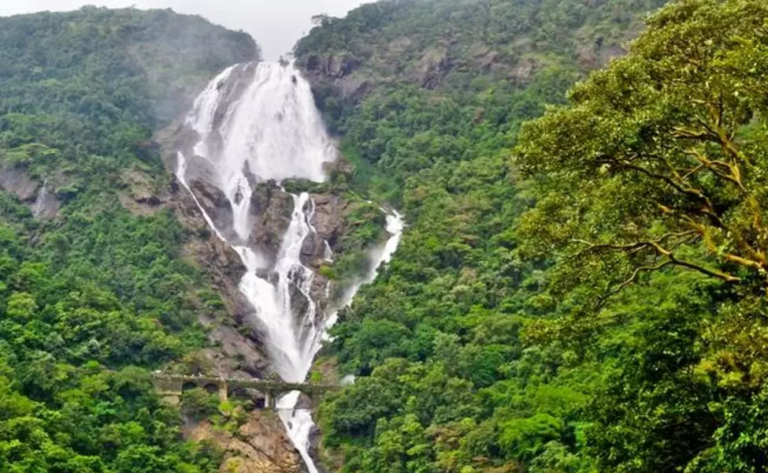 | Dudhsagar Falls (literally Sea of Milk) is a four-tiered waterfall located on the Mandovi River in the Indian state of Goa. |
|---|---|---|
| 2. Gokak Falls | 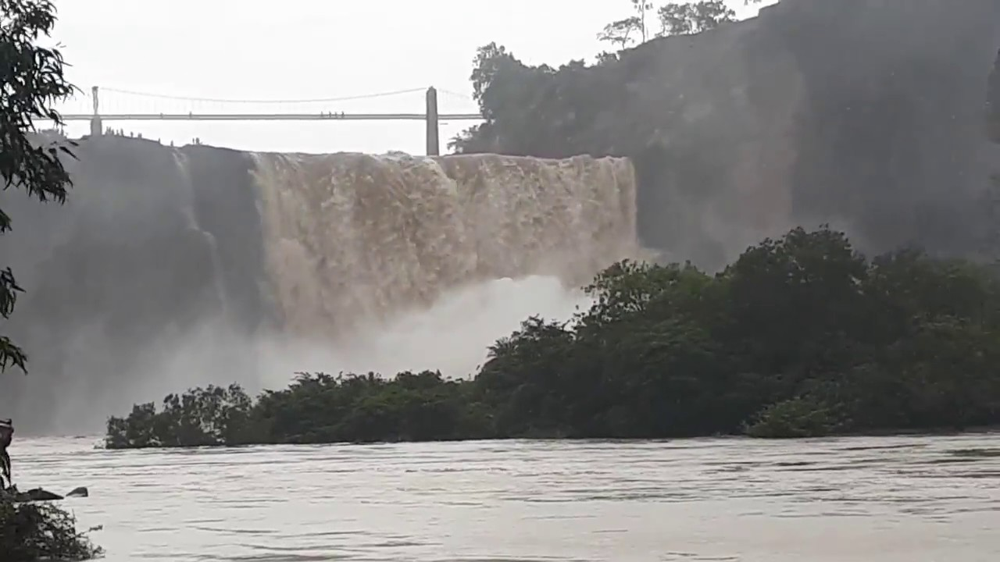 | The Gokak Falls is a waterfall located on the Ghataprabha River in Belagavi
|
| 3. Nohkalikai Falls | 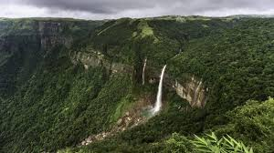 | Nohkalikai Falls is the tallest plunge waterfall in India.Its height is 1115
|
| 4. Jog Falls | 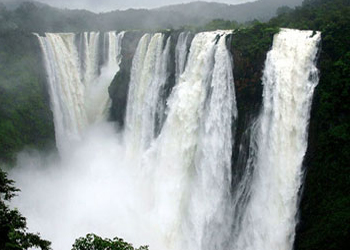 | It is the 2nd highest waterfalls in India |
Monuments
| 1. Taj Mahal | 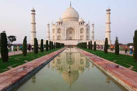 | The Taj Mahal is an ivory-white marble mausoleum on the south bank of the Yamuna river in the Indian city of Agra. |
|---|---|---|
| 2. Gol Gumbaz | 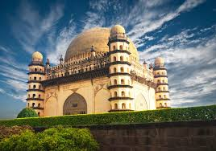 | Running around the inside of the dome is the whispering gallery where even
|
| 3. Qutub Minar | 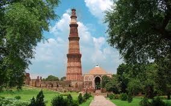 | Qutub Minar is a 73-metre (239.5 feet) tall tapering tower of five storeys in Delhi, with a 14.3
|
| 4. Gateway Of India | 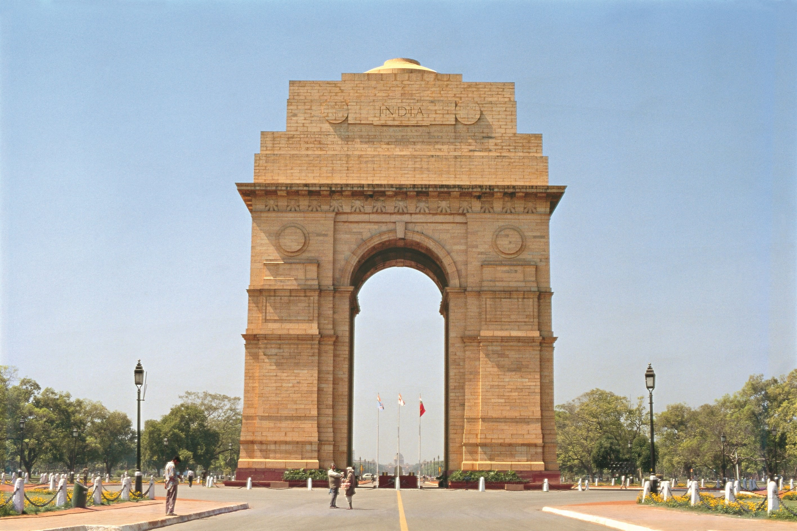 | The India Gate is a war memorial located astride the Rajpath, on the eastern edge of the
|
Forts
| 1. Red Fort | 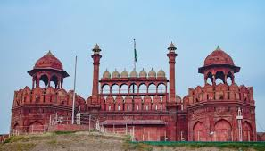 | The Red Fort is a historic fort in the city of Delhi in India. Every year on the Independence day
|
|---|---|---|
| 2. Gwalior Fort | 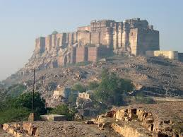 | Gwalior Fort is a hill fort near Gwalior, Madhya Pradesh, central India.The fort has existed since the 10th century. |
| 3. Sindhudurg Fort | 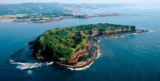 | Sindhudurg Fort is a historical fort that occupies an islet in the Arabian Sea, just off the coast of Maharashtra in Western India. |
National Parks
| 1. Jim Corbett National Park | 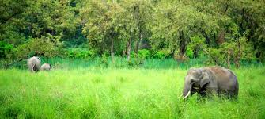 | Jim Corbett National Park is a forested wildlife sanctuary in northern India’s Uttarakhand State. Rich in flora and fauna, it’s known for its Bengal tigers.Animals, including tigers, leopards and wild elephants. |
|---|---|---|
| 2. Bandipur National Park | 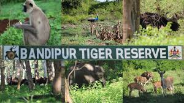 | Bandipur National Park established in 1974 as a tiger reserve under Project Tiger, is a national park located in the Indian state of Karnataka, which is the state with the second highest tiger population in India. |
| 3. Kazirnaga National Park | 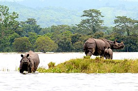 | Kaziranga National Park is a national park in the Golaghat and Nagaon districts of the state of Assam, India. The sanctuary, which hosts two-thirds of the world's great one-horned rhinoceroses, is a World Heritage Site. |